Nuestras bebidas:
Smoothie

Esta deliciosa mezcla de smoothie orgánica contiene una deliciosa combinación de hojuelas de avena molida orgánica con polvo de proteína de arveja orgánica, cacao en polvo orgánico, canela molida, sal de maras rosada, polvo de camu camu orgánico y stevia pura en polvo.
Capuccino

El Capuccino tiene un aroma intenso que combina las esencias subyacentes de flores y frutos con los olores más audaces de la leche, tostados (cereales, caramelo), chocolate (cacao, vainilla) y frutos secos. Tiene un notable cuerpo con una atractiva sensación de crema, combinado con un sabor amargo suave.
Irlandes

Una mezcla de café caliente y whisky coronado por nata o crema de leche.
En realidad es una forma fantástica de tomarse un café los días frios del otoño y el invierno, cumpliendo una única condición: ser mayor de edad.
Frappe
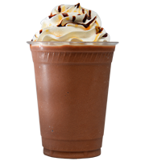El frappé es una bebida de café fría elaborada y servida de forma especial.
Existen diferentes tipos de frappés, según el tipo de café y la cantidad de leche que hayamos utilizado para su elaboración: frappé clásico, frappuccino (cappuccino), frappé latte (café latte),etc..
Macchiato
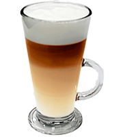Un café macchiato vendría a ser un café expreso que se ha cortado con leche para reducir el amargor.
En un café macchiato la leche es la menor proporción de la bebida que te vas a tomar ya que simplemente va a manchar tu café expreso.
Moccha Latte
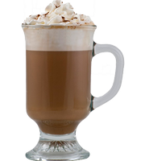El Moccha Latte es una bebida integrada por 2/3 partes de leche, y 1/3 de café, con un toque audaz de chocolate, normalmente en forma de jarabe.
Expresso
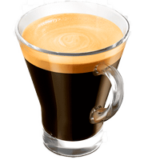Es un tipo de café negro fuerte que se forma cuando el agua caliente pasa a mucha presión través de los granos de café molidos. Si bien esto puede sonar similar a un café estándar, son muy diferentes. El espresso requiere mucha más presión y mucho menos tiempo de preparación que el café.
Manchado
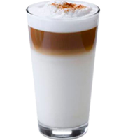Se trata de un vaso de leche al que se le añade un poco de café, poco más que una gota, sobre la leche previamente caliente, servido en vaso de cristal.
«Muy poquito café y mucha leche»
Té helado con leche
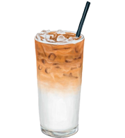«Thai Tea»
Es una mezcla de té negro, especias, azúcar, leche condensada azucarada y leche evaporada.
Destaca por su tono ámbar oscuro o naranja.
Sirve para refrescarnos cuando hace calor y también para acompañar las comidas picantes.
Té Helado
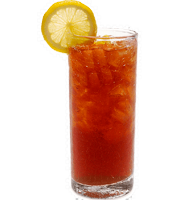El té helado o «Iced tea», es el té preparado en infusión caliente (de la forma normal en que preparamos el té) pero servido frío o con hielo.
La forma ideal de beber té en verano y aprovechar sus beneficios para la salud.
Red Té
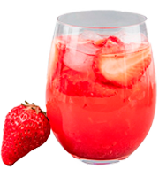Él té de frutos rojos o frutos del bosque se constituye de frambuesas, ciruelas, arándanos, frutillas o moras principalmente.
«Ofrece un gran valor nutricional». Sabor intenso, así como un color característico.
Exprimido
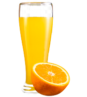Clasico exprimido de naranjas organicas.
Tomar un vaso de jugo de naranjas diario favorece la eliminación de toxinas y desechos que el cuerpo no necesita.
Nuestras comidas:
Frola

Se compone de una masa cubierta tradicionalmente con dulce de batata o dulce de membrillo.
Es adornada con tiras delgadas de la misma masa, dando forma de cuadriculado romboidal sobre la capa de dulce
Cheescake

Eheesecake se compone de una pasta preparada a partir de bizcocho seco desmenuzado, manteca y azúcar. Se rellena con queso blanco espeso, mezclado con huevos y azúcar. Cocido al horno y luego desmoldado, cubierto de frutillas frescas o frutos rojos.
Torta de coco
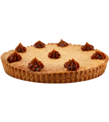Si te gusta el coco y el dulce de leche, entonces viniste al lugar perfecto.
Una masa quebrada que se deshace en la boca con una generosa capa de delicioso dulce de leche argentino y cubierta con trozos aromáticos de coco dorado.
Selva negra

Una masa crocante pero tierna a la vez, y una crema de ricotta aromatizada con ralladura de naranja que la hace única.
Tarta de ricota
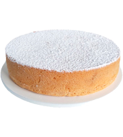Una masa crocante pero tierna a la vez, y una crema de ricotta aromatizada con ralladura de naranja que la hace única.
Tarta de frutillas
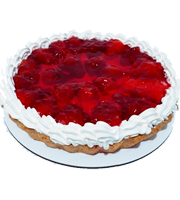Está compuesta por una delicada masa de base, rellena con una suave crema diplomática y decorada en la superficie con frutillas. Es una riquísima y fresca tarta, ideal para el verano.
Petit Four
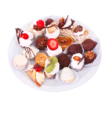Cada petit four se decora con esmero, resultando delicados y estéticamente atractivos.
Ideales para acompañar el café, en meriendas o a modo de postre.
Croissant
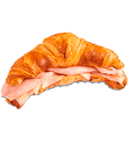Croissant rellena con jamón cocido y queso tybo.
Si eres de los amantes del crujiente sabor del hojaldre, aquí te damos esta deliciosa opción con jamón y queso.
Submarino
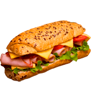Bocadillo hecho en barras de pan alargadas, que recuerdan a la forma de un submarino, rellenos de embutidos, queso, ensalada y condimentados con mayonesa.
Tostado
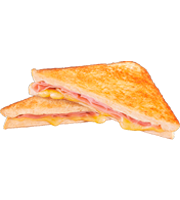Un tostado de jamon natural y queso, en pan de miga que se tuesta hasta que sus tapas de miga queden doradas y crocantes.
Frutas

La ensalada de frutas es un plato fresco, saludable, lleno de color y sabor.
Es rica en fibras, vitaminas y minerales y, se le agrega jugo de limón, un buen aliado como antioxidante.
Saludable
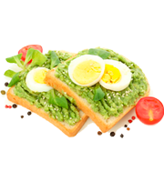¿Queres desayunar algo delicioso y saludable a la vez? La tostada de palta con huevo es tu opción ideal para comenzar tu día.
El pan tostado con palta y huevo es el desayuno saludable perfecto. Lleno de tanto sabor que no querrás perderte ni un bocado.